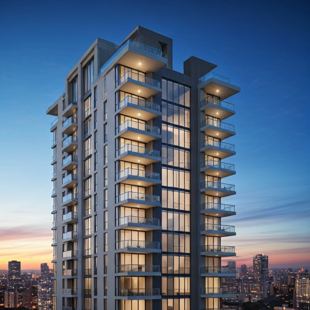
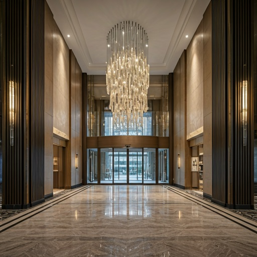
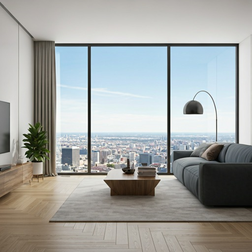
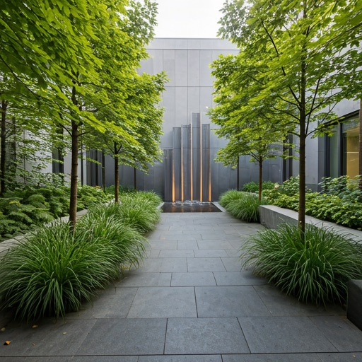
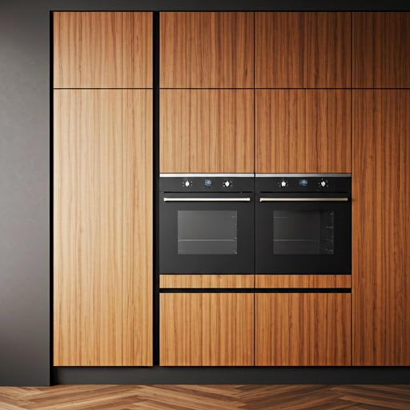
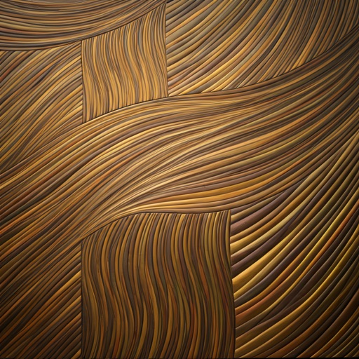
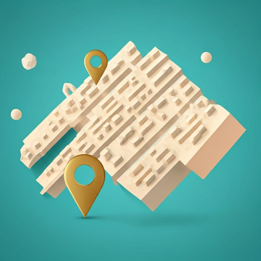
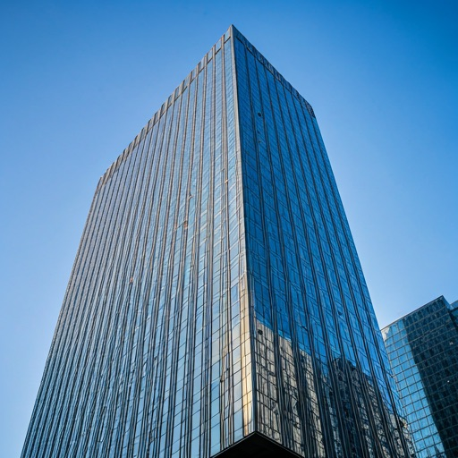
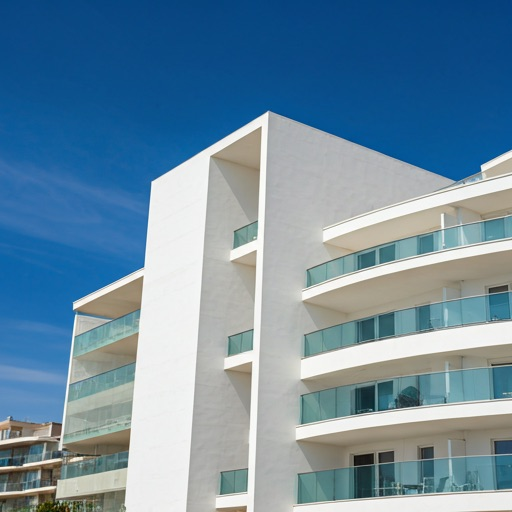
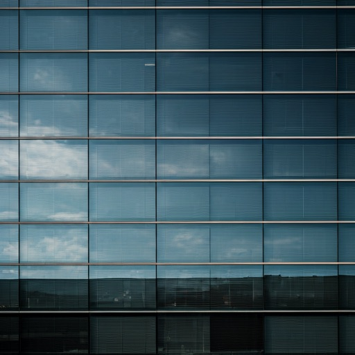

Vista Rezidans
Avcılar, İstanbul | 2023
Proje Hakkında
Doruk İnşaat olarak, Avcılar'ın kentsel dönüşüm vizyonuna öncülük eden en prestijli projelerimizden biri olan Vista Rezidans'ı gururla sunuyoruz. Şehrin kalbinde yükselen bu yapı, sadece bir konut projesi değil, aynı zamanda bölgenin mimari silüetini değiştiren bir simgedir.
Deprem güvenliği ve modern yaşam standartlarını odağına alan Vista Rezidans, estetik ve mühendisliği mükemmel bir dengede buluşturuyor. Geniş cam yüzeyleri, nefes alan yaşam alanları ve sürdürülebilir malzeme seçimiyle Avcılar'da yeni nesil yaşamın kapılarını aralıyoruz.
Proje Künyesi
Konum
Avcılar / İstanbul
Proje Tipi
Kentsel Dönüşüm
Teslim Yılı
2023
İnşaat Alanı
12.500 m²
Kat Sayısı
12 Kat
Daire Sayısı
120 Bağımsız Bölüm
Görsel Galeri





Özellikler & Donatılar
Modern Yaşamın Gereklilikleri
Depreme dayanıklı yapı
En güncel yönetmeliklere uygun radye temel ve perde beton sistemi.
Modern mimari
Fonksiyonelliği estetikle birleştiren zamansız tasarım çizgileri.
Kapalı Otopark
Her daireye özel, güvenli ve 7/24 izlenen kapalı park alanı.
Hızlı Asansörler
Yüksek kapasiteli, sessiz ve enerji tasarruflu asansör grupları.
Sosyal Donatılar
Fitness salonu ve peyzaj alanları ile zengin sosyal yaşam.
Birinci Sınıf Malzeme
Dünya markalarının en kaliteli ürünleriyle donatılmış iç mekanlar.
Ulaşım ve Konum
Şehrin Ana Arterinde, Her Şeyin Merkezinde
Üniversite Mah. Karataş Sokağı No:31, 34320 Avcılar / İstanbul

Bu projeye benzer bir dönüşüm mü düşünüyorsunuz?
Teklif AlDiğer Projeler
İmzamızı Attığımız Bazı Eserler

Sky Center
Avcılar'ın en modern iş ve yaşam merkezi olarak tasarlandı.
Detayları Gör arrow_forward
Deniz Esintisi Evleri
Mavi ve yeşilin birleştiği noktada huzurlu bir yaşam alanı.
Detayları Gör arrow_forward
Parseller İş Merkezi
Şehrin dinamik yapısına uygun, fonksiyonel ofis çözümleri.
Detayları Gör arrow_forward